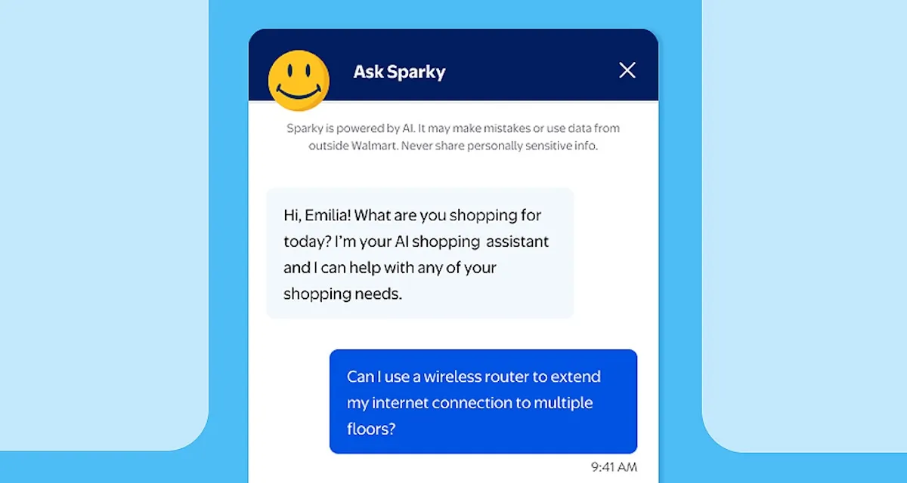

Sparky is the friendly face of Walmart's AI shopping assistant — always the Everyday-Blue smiley in Bentonville-Blue linework. Full set (conversation UI, prompts, expression sheets) in assets/illustrations/mascot/.